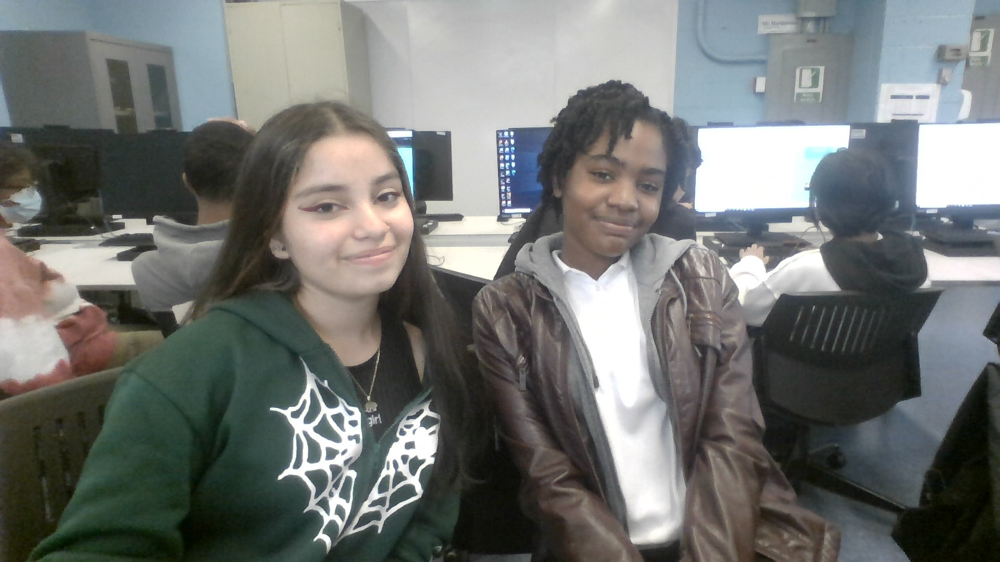

Thomas A Edison CTE High School
Web Development
October 6, 2022
Done by:Jaunel Deans, Sol Pulido
Lab#7
Mushroom Squad's Homepage
Hello and welcome to the Mushroom Squad's page. We are in Ms.Ramirez's Web Development class from Period 7 - 8. Our mission is to make a positive impact on the ever moderizing world through coding, communication and to build deeper connections with the people around us. We enjoy Web Developing, getting to know the backbone of the internet and how we can use it to our advantage to get our truth out into the world. If you want to get to know us more click the links below and enjoy knowing just a little more about the members of the Mushroom Squad.
Jaunel's Personal Page
Sol's Personal Page
Jaunel's Fake News
J1